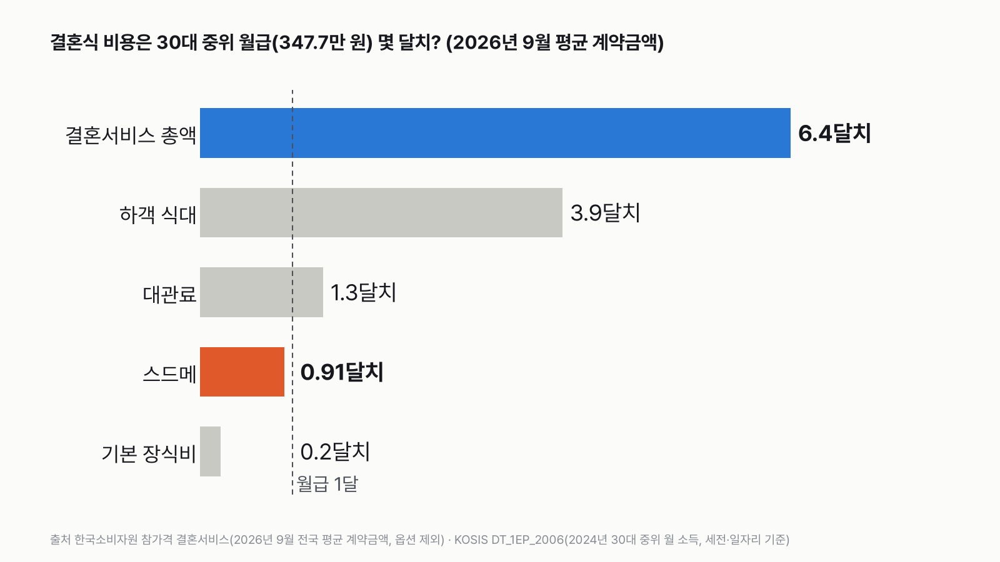

스드메는 월급 몇 달치일까
결혼 비용 하면 스드메가 먼저 떠오르지만, 평균으로 보면 한 달 월급 안쪽이에요. 총액 6.4달치 가운데 3.9달치가 하객 밥값이에요.

3줄 요약
- 스드메(스튜디오·드레스·메이크업) 평균 계약금액은 316.9만 원이에요. 30대 중위 월급(347.7만 원)의 0.91달치로, 한 달 월급이 안 돼요.
- 예식장 대관료·장식비·하객 식대까지 더한 결혼서비스 총액은 2,215.8만 원, 6.4달치예요.
- 가장 큰 건 하객 식대예요. 1,359.7만 원으로 3.9달치예요.
| 항목 | 평균 계약금액 | 30대 중위 월급 몇 달치 |
|---|---|---|
| 하객 식대 | 1,359.7만 원 | 3.9달치 |
| 예식장 대관료 | 461.7만 원 | 1.3달치 |
| 스드메 | 316.9만 원 | 0.91달치 |
| 예식장 기본 장식비 | 77.6만 원 | 0.2달치 |
| 결혼서비스 총액 | 2,215.8만 원 | 6.4달치 |
스드메: 한 달 월급 안쪽
스드메 평균 계약금액은 316.9만 원이에요. 30대 일자리 중위 월급 347.7만 원보다 30.8만 원 적어요.
평균 월급(397.1만 원)으로 나누면 0.80달치로 더 작아져요.
하객 식대: 총액의 61%
총액 2,215.8만 원 가운데 하객 식대가 1,359.7만 원이에요. 61%예요.
예식장 1인당 식대의 가운데 값은 6만 원이고, 최소 보증 인원의 가운데 값은 200명이에요.
지역에 따라 2.7배
서울 강남의 결혼서비스 총액은 3,401.3만 원이에요. 같은 30대 중위 월급으로 나누면 9.8달치예요.
가장 낮은 부산은 1,254.3만 원, 3.6달치예요. 두 곳 차이는 2.7배예요.
결혼식 하루 비용과 부부 소득을 견준 이야기는 30대 신혼부부 실험맨, 둘이 석 달 벌면 결혼식 하루 비용을 낼 수 있을까에 있어요.
숫자를 다시 보며
평균 계약금액이라 선택품목(생화 장식, 본식 촬영 등)은 빠져 있어요. 실제 영수증은 이보다 클 수 있어요. 월급은 세전이고 일자리 하나 기준이에요. 여러분이 생각한 스드메 비용은 월급 몇 달치였나요?
이 숫자는 어디서 왔나요
출처
기준일 결혼서비스 가격은 2026년 9월, 월급은 2024년 값이에요. 두 해가 달라요. 2026년 11월 16일에 계산했어요.
| 데이터 | 출처 | 쓰임 |
|---|---|---|
| 결혼서비스 평균 계약금액(2026년 9월) | 한국소비자원 참가격(price.go.kr) 결혼서비스 지역별 통계 | 항목별·지역별 금액, 식대·보증 인원 가운데 값 |
| 임금근로일자리 소득(2024년) | 국가데이터처, KOSIS DT_1EP_2006 | 30대 월 소득 중위값·평균 |
어떻게 셌나요
- 결혼서비스 비용: 한국소비자원 참가격 결혼서비스 통계, 2026년 9월 전국 평균 계약금액이에요. 총액은 대관료·기본 장식비·하객 식대·스드메를 더한 값이고, 선택품목(옵션)은 빠져 있어요.
- 30대 월급: KOSIS 임금근로일자리 소득(DT_1EP_2006), 2024년 30대 월 소득의 중위값(347.7만 원)과 평균(397.1만 원)이에요. 세전이고, 사람이 아니라 일자리 하나 기준이에요.
- 몇 달치: 항목 금액 ÷ 30대 중위 월급.
- 지역 금액도 전국 30대 중위 월급으로 나눴어요. 지역별 월급은 쓰지 않았어요.
한계 4가지
이 데이터로 말할 수 없는 것
- 가격(2026년)과 월급(2024년)의 해가 달라요. 2026년 월급이 나오면 몇 달치는 조금 줄 수 있어요.
- 월급은 세전이고 일자리 기준이에요. 세금을 뗀 실제 손에 쥐는 돈으로 나누면 몇 달치는 더 커져요.
- 평균 계약금액은 계약한 사람들의 평균이에요. 스드메를 하지 않거나 작은 결혼식을 한 사람은 들어 있지 않아요.
- 지역 금액을 전국 월급으로 나눴어요. 지역마다 월급이 달라서, 지역 간 '몇 달치' 차이는 어림이에요.
새 글 나오면 받아 보기
피드 리더 앱에 이 사이트 주소를 한 번 넣어 두면, 새 글이 올라올 때 앱에 떠요. 가입이나 메일 주소는 필요 없어요.
받는 법 보기
- 피드 리더 앱을 하나 골라요. 새 글을 모아 보여 주는 앱이에요. 예를 들면 Feedly나 Inoreader가 있어요. 둘 다 무료고 웹·휴대폰에서 써요.
- 앱에서 '구독 추가'(+)를 누르고 아래 주소를 붙여 넣어요.
- 끝이에요. 새 글이 올라오면 앱 목록에 떠요.
https://protofu.github.io/opendata-insight/feed.xmlFeedly를 쓴다면 여기를 눌러 바로 추가할 수도 있어요.